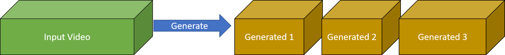

A simple but effective trick to enhance the temporal diversity of our samples is to generate outputs with less frames than in the input video.
Generating samples with similar number of frames as in the input video result in outputs that are "in sync".
Intuitively, the motion of the input video is the only motion that is coherent for this amount of frames.
Examples for generated sample of same number of frames (original in red):
Generating Shorter Samples

By generating shorter videos allow for shorter motions from different times in the input video, to occur simultaneously in the generated outputs: